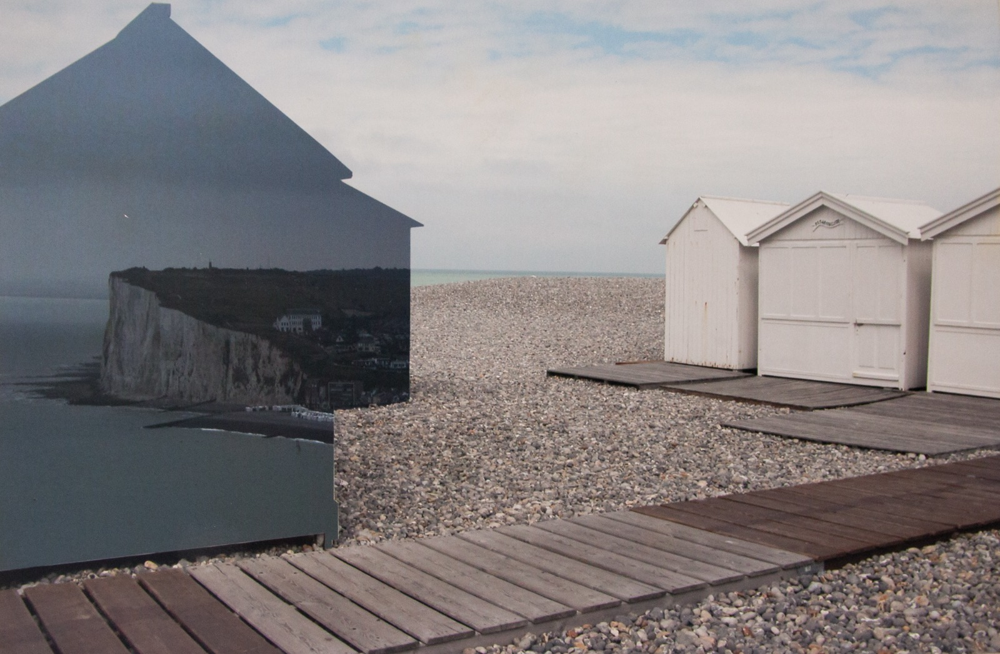
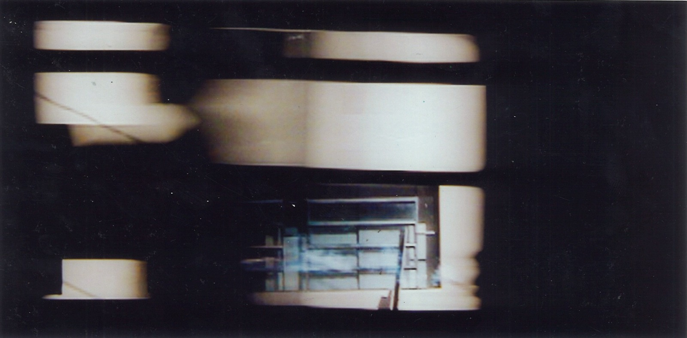

Sem título ["Paisagem noturna"], 1965
Emiliano Di Cavalcanti
Emiliano Di Cavalcanti, um dos maiores expoentes do modernismo brasileiro, destacou-se como pintor, ilustrador e gravurista, retratando em grande parte de sua obra a figura da mulher brasileira...
Bem-vindo ao site "DO MURO AO MUnA", este é um site dedicado ao trabalho final para a disciplina "Exposição em Contexto - Práticas no MUnA"
Memorial Descritivo: Acervo MUnA

Sem título (da série “Azulada”), 2008
Lygia Eluf
Azulada é uma série de serigrafias que apresenta paisagens vistas a uma certa distância, construindo uma poética que explora o reconhecimento de formas ao olharmos de longe...


desDOBRAMENTOS da paisagem
Sandra Rey
Sandra Rey desenvolve seus trabalhos a partir da fotografia e edição de imagens, explorando a relação entre arte e natureza...
Perímetro urbano
Valéria Menezes
A obra destaca partes da cidade frequentemente esquecidas, questionando quem vive nas margens e explora a estética das favelas urbanas...

Passantes
João Virmondes
A série fotográfica Passantes captura o movimento urbano, congelando cenas cotidianas que convidam o espectador a observar a cidade de outra forma...
Memorial Descritivo: Registros da Cidade

Vestígios Urbanos
Bruno Póvoa Rodrigues
Fotografias em preto e branco de grafites, capturando a arte urbana que é rapidamente apagada, e preservando essas expressões transitórias...
Udi tem fome
Bruno Póvoa Rodrigues
Os grafites são reconhecidos pela resistência, questionando o espaço urbano e as realidades sociais contemporâneas, proporcionando uma crítica social...
“A percepção do grafite nos leva a enxergar lugares que normalmente passam despercebidos, cruzando com transeuntes, andarilhos e moradores de rua. Eles compartilham esses espaços ocupados pelos grafites, áreas muitas vezes esquecidas e negligenciadas pela cidade.”
Memorial Descritivo: Murais de Artistas Convidados
Abaporu no Arraial
MuzaiArt
Como um tributo à Semana de
Arte Moderna de 1922 e à arte
de cordel nordestina. A obra faz
referência ao icônico Abaporu (1928), de Tarsila do Amaral,
combinando-o com a representação de um arraial, uma festa
típica brasileira. O artista utiliza
traços, cores e formas simples
para expressar uma poética lúdica e ingênua, ao mesmo tempo em que celebra a brasilidade.

Trem-de-Onça
Folye
A obra apresenta uma fusão entre a onça-pintada, um animal
ameaçado de extinção no Brasil,
e o trem Maria-Fumaça, que foi
fundamental para o desenvolvimento das cidades do Triângulo
Mineiro. Com isso, o artista critica a relação entre o crescimento
urbano e a destruição da fauna
brasileira.
Levando o 034 Longe
Queen
A obra da artista Amanda Fonseca, conhecida no meio do grafite como Queen, apresenta sua
personagem conduzindo um
trem de ferro, transporte responsável pelo desenvolvimento
das cidades do triângulo mineiro. Para associar o crescimento das cidades com a expansão
da arte urbana a artista grafitou
elementos típicos dessa arte,
como sua assinatura em uma
fonte conhecida como “bubble
letter”, o DDD (discagem direta
á distancia) de sua cidade 034,
entre outros elementos.

Graças a Deus
Dequete
O grafite de Dequete representa
um tamanduá-bandeira, animal
típico do Cerrado, segurando
um abafador usado por brigadistas no combate ao fogo. Em
meio a um cenário de estiagem
prolongada e queimadas intensas na cidade, o tamanduá parece agradecer pela chegada da
chuva, criando uma imagem de
esperança e alívio. As obras de
Dequete são caracterizadas pelo
uso expressivo das cores verde,
azul e laranja, que dão vida e
identidade ao seu trabalho, ao
mesmo tempo que dialogam
com as questões ambientais locais.
Sem Título
Kali
Kali é uma artista uberlandense
que se destaca na produção de
grafite. Em sua obra, ela se inspira no quadro Abaporu, de Tarsila
do Amaral, recriando-o com elementos urbanos que refletem
sua realidade. A pintura apresenta uma personagem azul segurando uma bomba cintilante, que remete a um estilo de
grafite conhecido como ‘bomb’,
caracterizado por letras com silhuetas arredondadas e ‘estouradas’. Ela também usa um tênis
rosa que lembra o modelo Shox
TL, popularmente conhecido
como “12 molas”, um símbolo
forte da cultura urbana e periférica no Brasil. A cena noturna é
iluminada por uma lua amarela,
e à frente da personagem está
a tag da artista, em um tom de
rosa que remete à cor dos sapatos.
Sem Título
Wesleyundef
A obra relaciona hip hop e grafite, destacando a diversidade
cultural no Brasil. Desde os anos
1980, essas manifestações artísticas das periferias urbanas se
consolidaram como formas de
resistência e denúncia das desigualdades sociais, oferecendo
voz à juventude marginalizada
para expressar suas vivências e
reivindicações. O rap, com suas
letras impactantes, aborda temas como racismo, violência
e pobreza, enquanto o grafite
transforma muros em telas vibrantes que retratam essas realidades. Juntas, essas formas de
arte ocupam espaços públicos,
ressignificando a arte de rua e
fortalecendo a identidade cultural das comunidades, além
de impulsionar movimentos de
transformação social e empoderamento.
Piu Piu 100%
Desconhecido
O grafite apresentado se apropria de um ícone dos desenhos
animados criado por Bob Clampett em 1940, parte da famosa
série Looney Tunes. Essa imagem pode ser um apelido dado
ao autor do grafite, que utiliza
essa referência como tag para
marcar sua presença nos locais
onde grafita. Um dos grafites
com maior recorrência na cidade de Uberlândia.
Memorial Descritivo: Área em Homenagem
.jpeg)
A Casa da Rainha do Frango Assado
Alex Vallauri
Apresentada em 1985, a instalação A Festa da Rainha do Frango Assado foi uma das obras
mais emblemáticas do artista
Alex Vallauri. Composta por grafites vibrantes e provocativos, a
instalação também incorporava
objetos do cotidiano, como um
carro, que enfatizavam a intersecção entre arte e vida doméstica. Vallauri utilizou esses elementos comuns para criticar o
caráter descartável da modernidade, destacando como a sociedade contemporânea valoriza
produtos e experiências efêmeras em detrimento de relações
mais significativas.
Ossário
Alexandre Orion
“Apresentação do documentário de Alexandre Orion Ossário
e o processo completo da série.
Vídeo da primeira intervenção
Ossário de 300 metros no túnel
Max Ferrer, São Paulo.”